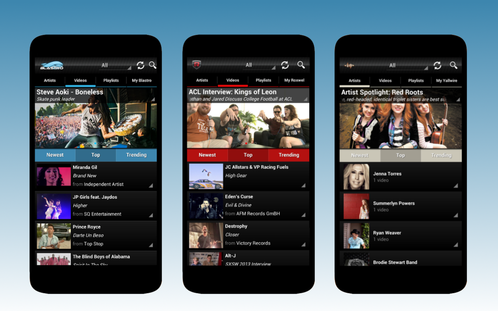

Go to Movies
Seeing Threes at the End of the Road
Posted on Oct 24, 2013.

Update: The Blastro, Roxwel, and Yallwire apps have been released. Come celebrate with us.
We made it. It's happening. Blastro Networks is finally ready to release their redesigned, rejuvenated android apps, due in large part to the work I did over the summer, and also to the less frequent work I've done over the last few school months. Although I have my reservations about a few of the design choices made by the company, I understand the immense amount of planning that occurs behind the scenes to keep all of their web and mobile apps behaving homogeneously and at a high level of polish. Nevertheless, they put a lot of faith in my ability as a novice Android developer at the time of my hiring, and I was blessed with an opportunity to lead the redesign and rebuilding of their three flagship apps as their sole developer. Having come this far, I've learned a ton of things about the Android platform, and I've been constantly impressed by the huge amount of support from third-party developers, who provide libraries that make complex tasks easy to implement and efficient to run. As an Android-developer-in-training, I would often revise old, deprecated code from the older Blastro app to make it cleaner and more efficient, only to realize that a library introduced in the past year was perfect for the job and could be integrated with just a few adjustments to the existing code base. Although it was disappointing to realize the last few hours of work were unnecessary, it ultimately allowed me to understand the Android lifecycle and architectures much more clearly, and you know what they say – you shouldn't use a tool unless you know how it works, or you'll be tearing your hair out when problems arise. A lot of the UI flow I was asked to implement by my technical advisors involved modifying standard Android and third-party classes, and my past failures and successes working at an unnecessarily low level made it easy to understand how these classes interacted with the Android state and what their limitations were. While modifying the MediaController class to provide a custom video player controller, I was surprised by some of the haphazard logic in the standard controller, and had to fix several bugs regarding video connections and the play-pause state that occurred whenever the surface state was changed – an event triggered by things like orientation changes and keyboard layout accommodations. One of the biggest challenges was modifying ListViews and GridViews to get the proper behavior to take place on the main artist and video browsers, where a single list holds sorted list results, a large carousel of featured items, and a scrolling/sticky button bar, all interconnected but with different behaviors and layout needs from within the view. You can note one glaring problem with my solution in grid mode, where the GridView will often recycle the carousel view and not be able to recognize its need to be redrawn. However, these types of graphical issues only seem to crop up on certain devices, such as the Galaxy SIII, and a lot of care was made to limit fragmentation issues before release. Although portions of the UI flow were requested by my advisors, the UI design itself was decidedly in my hands, and they trusted me to bring an updated Holo style to their apps while retaining an overall feel similar to the iOS app. The first rough version of the app followed the iOS app very closely, but as I grew more comfortable with Android design patterns and the way resources are interconnected, I was able to develop my own custom styles for various portions of the app and remodel its look and feel to be snappier and more eye-catching. Overall, I'm happy with the way the apps came out, and I was able to dip myself into almost every aspect of the Android app lifecycle – networking, efficient storage and display of data, synchronization of account data, UI design and flow, third-party library integration (including social media and ads)... Look out for the new-look Blastro, Roxwel and Yallwire on the Google Play Store soon, and get pumped for eventual Chromecast support.
Getting Cozy with Android Studio
Posted on May 24, 2013.
I recently switched over to Android Studio after months of frustratingly sitting back in my chair while Eclipse plinked around, cleaning and building the project every time I changed a few lines of code. Thank god. This is my first encounter with an IDE from JetBrains. It's cleaner, faster, and it just feels good to work with. It feels right. I don't have to tinker around with the 3 perspectives I want and the 15 others that get in the way; I don't have to slow my IDE down with plugins for vital functionality; I don't have to wade through menus to fix dependencies and all the other miscellaneous things that go wrong in Eclipse. Android Studio comes in hot. It does what you want, when you want. It makes sense. Android Studio is a joint effort between Google and JetBrains, and is built on JetBrain's IntelliJ IDEA. Despite being in early access preview, it manages to be better than Eclipse in just about every way possible. It's like that new kid in school with a fresh leather jacket and well-trimmed pompadour who manages to steal all the popular kids' crewmates and girlfriends before simultaneously revealing his 1964 Aston Martin and dropping the pants of everyone in a 5-mile radius. Or something like that. One of my favorite things about AS is how dynamic it is: color previews appear instantaneously and you can view the layout of your app on a number of different devices without ever compiling the project. I often found myself waiting for Eclipse whenever I wanted to test and compare different colors and positions, and I've probably wasted several hours nudging padding and weights to make it perfect. While I enjoy getting paid to reddit during compilation, sometimes a man just needs to see the damn thing work so he can move on to more important matters. My only complaint is the Logcat viewer. The only way to stop auto-scrolling to the most recent log is to click your way through an error, which automatically opens up the offending file. While I do appreciate the effort, it ends up being a nuisance to work with. There also appears to be some slowdown when attaching the debugger, which wasn't there when using Eclipse. Hopefully we'll see some improvements with Logcat going forward, but Android Studio manages to blow Eclipse away so completely in every other category that it's hard to imagine going back. In Google and JetBrains I believe.
HELLO, BLOG
Posted on May 24, 2013.